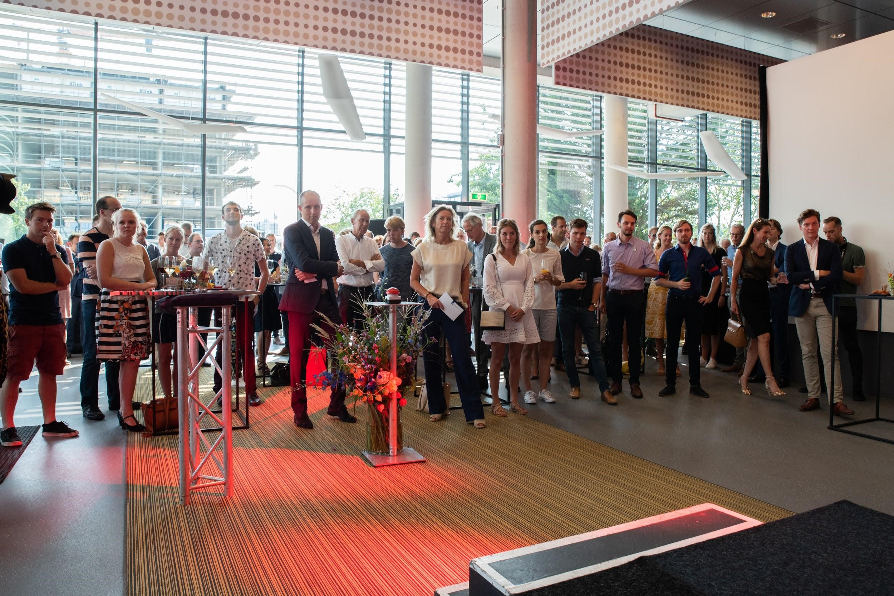
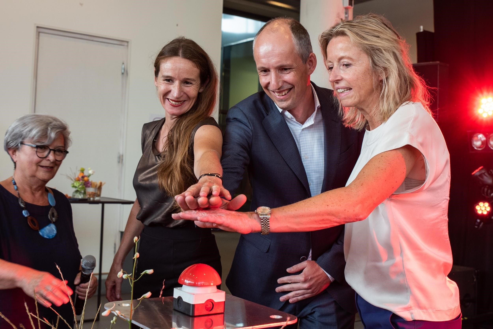

<div class="container-fluid" id="nieuwsbrief">
  <div class="justify-content-center align-self-center" style="width: 100%;">
  <div class="row">
    <div id="left" class="col-sm-7">
      
      <h4 class="display-4">NIEUWSBRIEF <i class="far fa-newspaper"></i></h4>
      <h5 class="display-5">MEEST RECENTE</h5>
      <p id="nieuwsbrief-title"> BC Leidse Schans </p>
      <p id="nieuwsbrief-subtitle">Door Tessa van Hooijdonk</p>
      <small class="text-muted">Nieuwsbrief 03-09-2019</small>
      <hr>
      <p class="lead">Servicekosten</p>
      <p>
          We hebben als bewonerscommissie de servicekosten goedgekeurd! DUWO zal de individuele afrekeningen deze weken afronden. Het eventueel te veel betaalde voorschot zal vervolgens door DUWO worden teruggestort.
      </p> 

      <p class="lead">Memoborden</p>
      <p>
          Zoals jullie gezien hebben, hangen er tegenwoordig memoborden in alle portieken. Hierin zullen wij belangrijke mededelingen en belangrijke informatie op verspreiden. Vergeet deze dus niet in de gaten te houden!
        </p>
      
      <p class="lead">Nieuwe gebouwen Epsilon en Sigma</p>
      <p>Sinds een maand zijn de nieuwe gebouwen op onze campus Epsilon en Sigma open en bewoond. Van harte welkom! Wegens het uitblijven van bezwaren, zijn wij verheugd te melden dat wij ook hen vertegenwoordigen!
      </p> 
      
      <p class="lead">Mededeling bouw</p> 
      <p>
        Maandag 9 en dinsdag 10 september van 7.00-17.00 uur vindt er groot afvoertransport plaats van de bouw! Dit geeft mogelijk verkeershinder bij het in- en uitrijden van de parkeergarage. Er zullen verkeersregelaars aanwezig zijn. Het is aan te raden niet over de weg achter de Kwikfit en de Gamma richting het Betaplein te lopen of te fietsen.
     </p>

     <p class="lead">Klachten omtrent bouw</p>
     <p>
        De bouwvak is weer voorbij en meteen kwamen er weer klachten bij ons binnen over joelende en glurende bouwvakkers. Wij hebben dit nogmaals gecommuniceerd naar onze contactpersoon van de bouw en hij zal dit nogmaals bespreken met de bouwvakkers. Mocht er niks veranderen aan de situatie, schroom niet om ons te mailen met je klacht. Wij doen er alles aan om de klachten op te lossen.
      </p>

      <p class="lead">Grofvuil</p> 
      <p>
        Uit ervaring blijkt dat er vaak oude meubels en ander grofvuil achterblijft in de hal. Echter, dit is niet de bedoeling! 
        Het grofvuil uit de hallen weghalen brengt extra kosten met zich mee die via de servicekosten worden doorberekend! Daarnaast komt de brandveiligheid in het geding.
      </p>
      <p>Grofvuilkan je gratis laten ophalen door de gemeente Leiden, door  <a href="https://gemeente.leiden.nl/inwoners-en-ondernemers/afval/grofvuil-wegbrengen-of-laten-ophalen/">online</a> een afspraak te maken of door het zelf weg te brengen naar de Milieustraat aan de J.C. De Rijpstraat (geen  afspraak nodig).<p>
      <p>Zie ook de memoborden voor informatie over gro1fvuil!</p>

      <p class="lead">Feestelijke opening Campus</p>
      <p>
          Afgelopen maandag 26 augustus 2019, was de feestelijke opening van de campus. Hiervoor was de minister van Binnenlandse Zaken aanwezig en wij waren als BC ook uitgenodigd! Na toespraken en de officiële opening was het tijd voor een borrel  en hebben diverse BC leden nieuwe contacten gelegd die in de toekomst nog wel eens van pas kunnen komen!
          
          
      </p>

    </div>
    <div id="right" class="col-sm-5">
      <h5 id="nieuwsbrief-archief" class="display-5">NIEUWSBRIEF ARCHIEF</h5>
      <mat-accordion>
          <mat-expansion-panel>
            <mat-expansion-panel-header>
              <mat-panel-title>
                  Nieuwsbrief 17-07-2019
              </mat-panel-title>
            </mat-expansion-panel-header>
            <mat-list>
              <mat-list-item>
                  <p class="lead">Hoera! De Bewonerscommissie is geboren</p>
                  <p>
                    De Bewonerscommissie Campus Leidse Schans, online te vinden als BC Leidse Schans, is een feit! De termijn waarin belanghebbende bezwaar konden maken tegen de aanstelling van de leden is verstreken en dit betekent dat we officieel zijn ge&iuml;nstalleerd op 17 juni 2019! 
                    Echter, dit betekent niet dat we de maanden tot onze offici&euml;le benoeming niks hebben ondernomen. In deze en volgende nieuwsbrieven houden we jullie op de hoogte van de kwesties waar de BC zich mee bezig houdt.  
                  </p> 
                  
              </mat-list-item>
              <mat-list-item>
                <a routerLink="archief">Lees Meer</a>
              </mat-list-item>
            </mat-list>
          </mat-expansion-panel>
          </mat-accordion>
      

    </div>
  </div>
  </div>
</div>